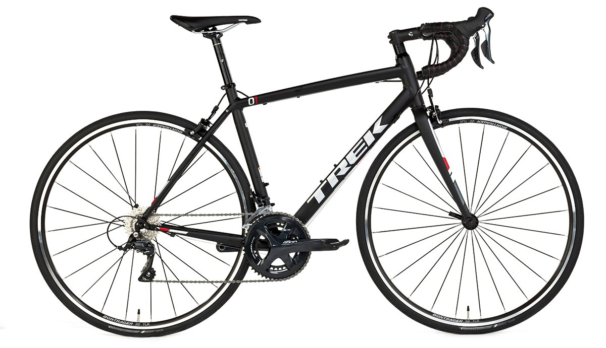
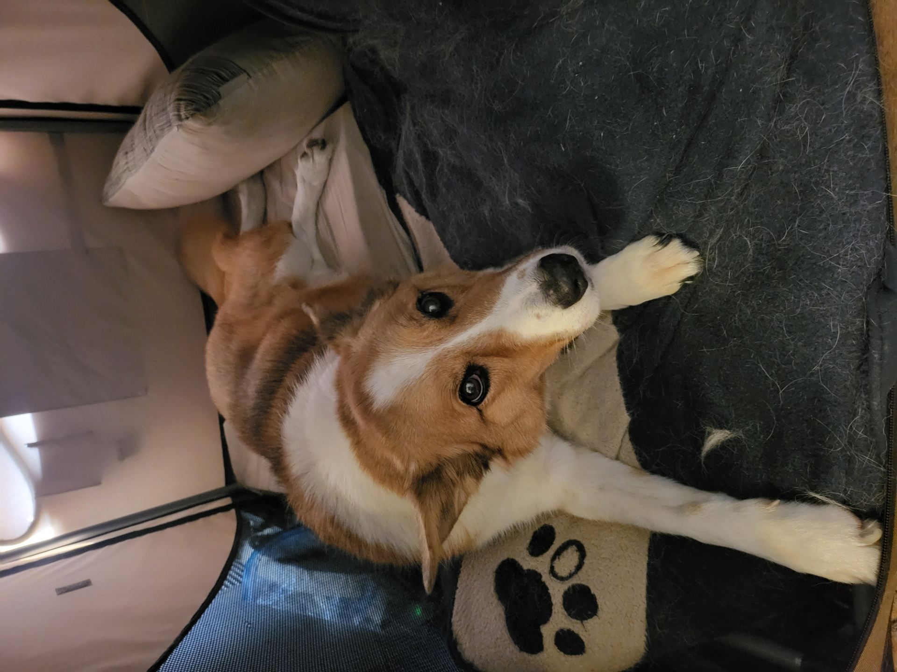

I like staying active when I can.
Cycling
Biking is a fun hobby for me. It's something I like to do to stay active. I like taking the backroads and riding to the beach.
Calvin
I have had calvin for over 12 years. Throughout that time we have hiked all around San Luis Obispo. He likes to go to the beach and walk around downtown.